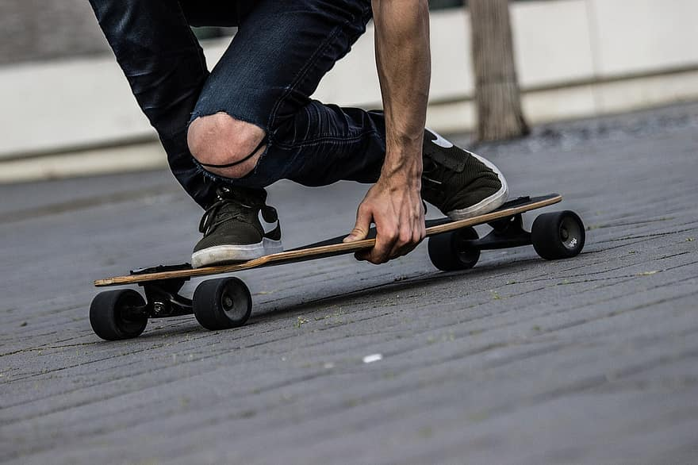
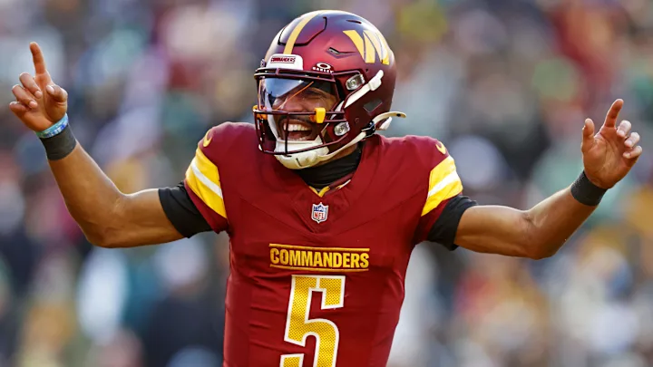

A from-scratch page about the things that keep me going — outdoors, sports, and entrepreneurship.
Use the links below to jump to any section on this page:
Growing up in Heber City, Utah, I was surrounded by some of the most stunning landscapes in the country. The Wasatch Mountains, Deer Creek Reservoir, and Timpanogos all feel like home to me. Whether I'm hiking, skiing, or just sitting by a lake, being outside recharges me in a way nothing else can.
My favorite outdoor activities, ranked:

Just pray I don't fall off please.I've been a sports fan my whole life. Growing up in Utah, college basketball was a religion — BYU vs. Utah games were practically family holidays. I played basketball growing up, and I still love following it at the college and professional levels.
Sports I follow closely:

Jayden Daniels is a BEAST.One of my biggest passions is entrepreneurship — the process of identifying problems and building solutions that create value for others. I love the creativity, problem-solving, and impact that comes with starting something new.
My current current businesses:
This video explains the meaning of life.